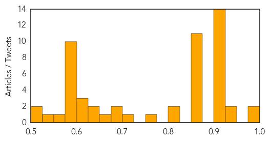

Toggle navigation
Early Warning
Daily Alerts
Unknown
Jun 10, 2014
Compare to:
-
Dengue Fever
Hemmorhagic Fever
Mold/Fungal Infection
Influenza
Meningitis
Pertussis / Whooping Cough
Middle East Respiratory Syndrome
Cholera
Hepatitis
Chikungunya
Yellow Fever
Bubonic Plague
West Nile Virus
Swine Flu
Ebola
Measles
Mumps
30 Day Trends
Web: 3
alerts
, 0
warnings
Twitter: 0
alerts
, 0
warnings
Top Articles:
Showing top 50 articles...
0.997
First MERS death in Algeria
0.995
The Ebola cases keep coming: Additional cases reported in Guinea, Sierra Leone
0.943
Five dead after rest home strep A outbreak
0.939
National virology lab to open at Muzaffarpur
0.917
Chicago Tribune
0.917
Chicago Tribune
0.917
Chicago Tribune
0.917
Chicago Tribune
0.917
Chicago Tribune
0.917
Chicago Tribune
0.917
Chicago Tribune
0.917
Chicago Tribune
0.917
Chicago Tribune
0.917
Chicago Tribune
0.917
Chicago Tribune
0.917
Chicago Tribune
0.917
Chicago Tribune
0.917
Chicago Tribune
0.867
Algeria reports first MERS death
0.866
UN chief "gravely concerned" by situation in Iraq's Mosul
0.866
Colombia government to announce peace talks with ELN rebels
0.866
Polish FM urges Russia to bar fighters, weapons at Ukraine border
0.866
Russia urges immediate ceasefire, start of dialogue in Ukraine
0.866
Pakistani forces seal off area around Karachi airport academy
0.866
Pakistani army sends troops to reinforce Karachi academy
0.866
Gunfire heard outside Karachi airport academy
0.866
Five foreign troops die in Afghanistan; reason unclear
0.863
Ten things you should know about ticks
0.856
Algeria reports first MERS death
0.813
Norovirus causes dozens of people to fall ill following swim at Thetis Lake Regional Park - BC
0.804
110 new cases of HIV in Utah in 2012
0.768
Why Are We Still Fighting Polio and Leprosy?
0.715
Hendra virus scare near Maitland puts Hunter on alert
0.696
A tick education: News
0.685
3.2 million people in Britain diagnosed with diabetes
0.651
Gum Disease Treatment Using the Laser-Assisted Procedure, the LANAP® Protocol is Now Available for Patients in Middletown Through Dr. Allan Ruda
0.648
EU demands virus testing on all US and Canadian live pig exports
0.626
Médecins Sans Frontières (MSF) International
0.620
No Cure for This Deadly Disease Yet
0.608
UN to provide first financial assistance to Serbia
0.606
Encephalitis Claims 42 Kids in Bihar
0.595
Obama blasts gun laws, calls for national 'soul searching'
0.595
Likud Party's Rivlin to replace Peres as Israeli president
0.595
Islamist militants seize control of Mosul, Iraq's second city
0.595
Merkel backs Juncker for top EU job
0.595
French National Front drops Jean-Marie Le Pen video blog
0.595
Travel chaos as France hit by dual rail and taxi strike
0.595
France’s electric-company chief faces corruption probe
0.595
UK’s Cameron steps up campaign to block Juncker candidacy
0.595
Nigerian women kidnapped by suspected Boko Haram militants
Top Tweets:
No tweets found for Jun 10, 2014
Web/News Articles
Tweets
Article Locations
Article Confidences
